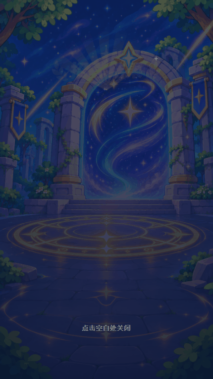

招募结果与弹窗标题修订
2026-11-22 · 从整张目标效果图图生图提取艺术字，去掉白雾与厚重字底；标题牌按实际牌面居中。卡片区分品质色与等级区，票券和按钮上移到卡片下方。
实际浏览器动效
标题光束与星芒、一次性彩色礼花、卡片错峰翻入，最后显示票券与按钮。以下为浏览器逐帧截图合成的循环预览；游戏中的礼花每次招募只播放一次。

招募结果
共用标题牌
已通过20组结果布局、真实单抽/十连/UP扣券、NEW/重复、再次招募、关闭/刷新和减少动态效果检查。29种界面 × 5种尺寸共145组几何检查，包含95个标题牌样本，文字可见中心与牌面中心偏差不超过1.43 CSS像素。插画和实际角色数据仍与参考示例有差别。
内置image_gen最终提示词 · 图生图原始资源